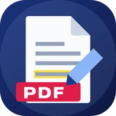
Sumo PDF
Lector y editor de PDF: abrí cualquier PDF, buscá, seleccioná y copiá texto, resaltá, firmá, completá formularios, organizá páginas y exportá a TXT.
Leé, buscá, copiá, resaltá, firmá y exportá a TXT cualquier PDF, en el celular y en la TV.
Los cambios (resaltados, notas, firma, formularios) se guardan en un PDF nuevo y quedan «aplanados» (son parte del dibujo, no se editan después en otro lector); el original nunca se modifica. Los emojis y algunos símbolos poco comunes no se pueden escribir dentro del PDF y se omiten. La firma dibujada es una imagen, no una firma digital certificada. En Android 13 o más el explorador interno sólo ve lo que Android permite: usá «Abrir PDF». Esta 1.0.0 se probó con pruebas automáticas en PC; todavía no se probó en un celular ni en un TV box reales.
Un solo APK para celulares Android 9 o más nuevos y para Android TV / TV box con Android 9 o más (pensado para el MX10).
Pago seguro con Mercado Pago · Sin publicidad · Pago únicoBotón de arrepentimiento
Pago seguro · Podés arrepentirte dentro de los 10 días.
Sin publicidad. Nunca.Pagás una vez y la app es tuya: sin banners, sin videos que te hacen esperar, sin interrupciones. Por qué cobramos
¿Te aparece un aviso al instalar (Play Protect u «orígenes desconocidos»)? Cómo instalar paso a paso — celular y TV.

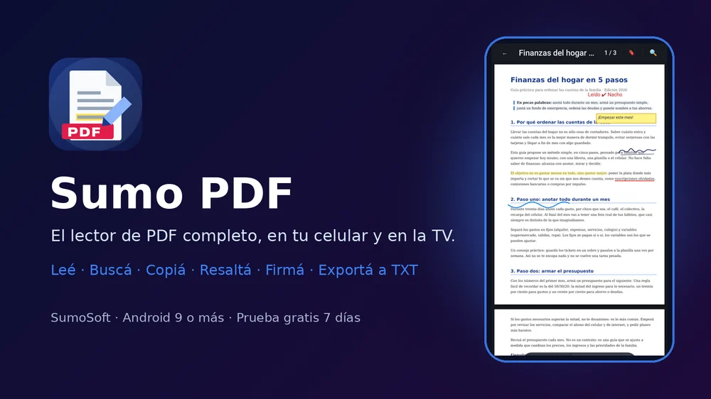
El lector de PDF completo
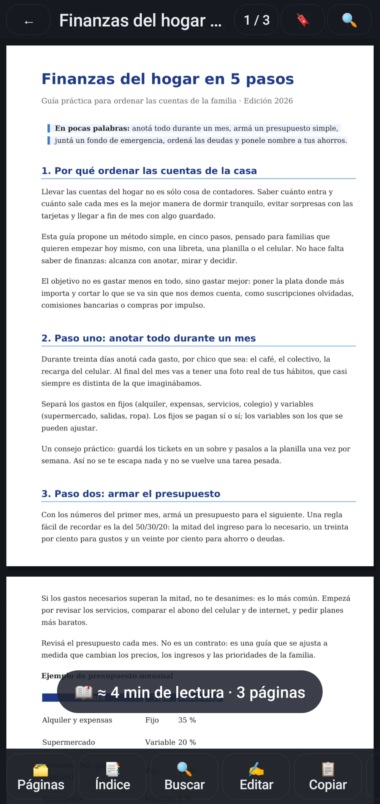
Lectura fluida con tiempo estimado
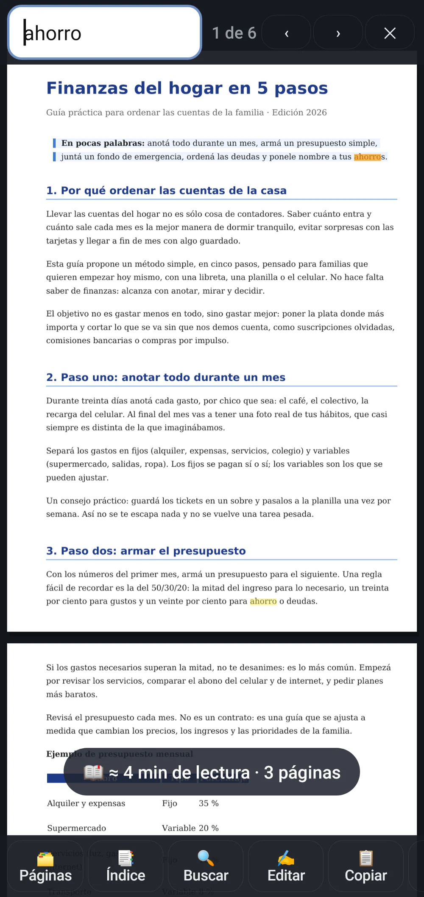
Buscar palabras
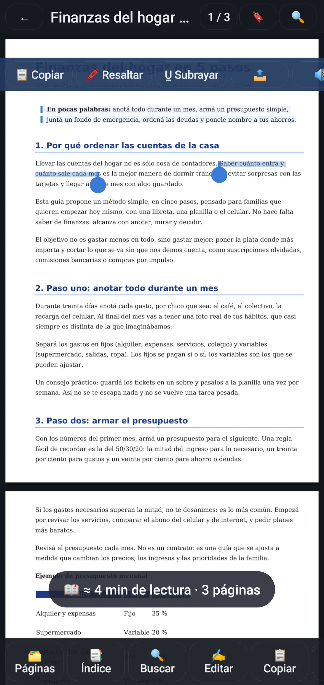
Seleccionar y copiar texto
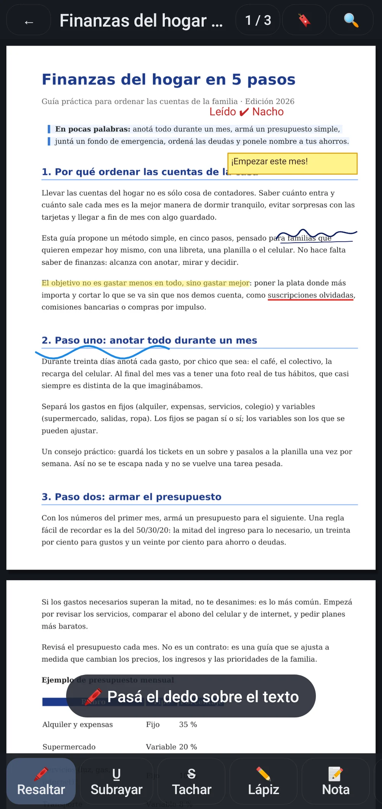
Resaltar, anotar y firmar
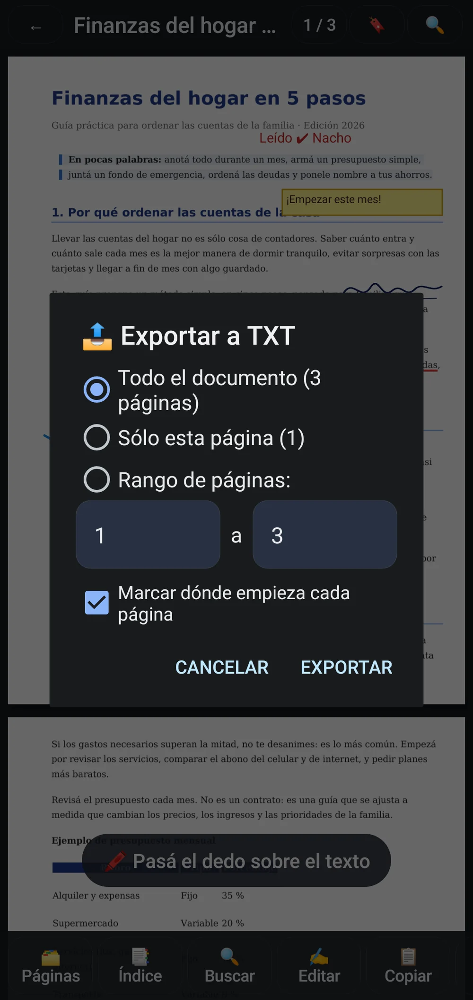
Exportar a TXT
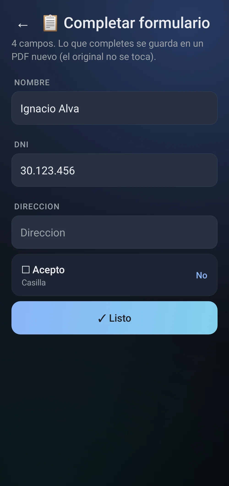
Completar formularios
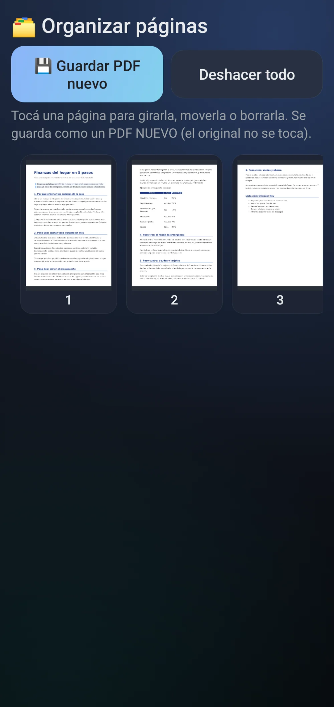
Organizar páginas
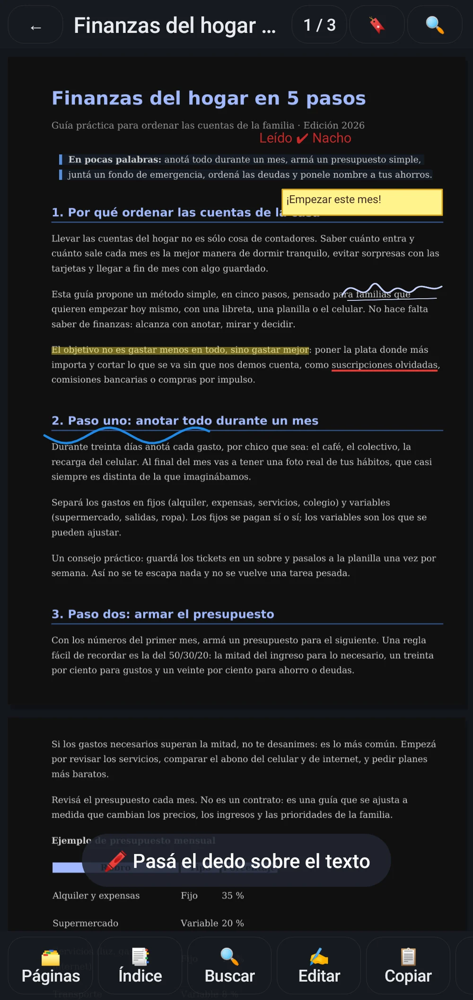
Modo noche
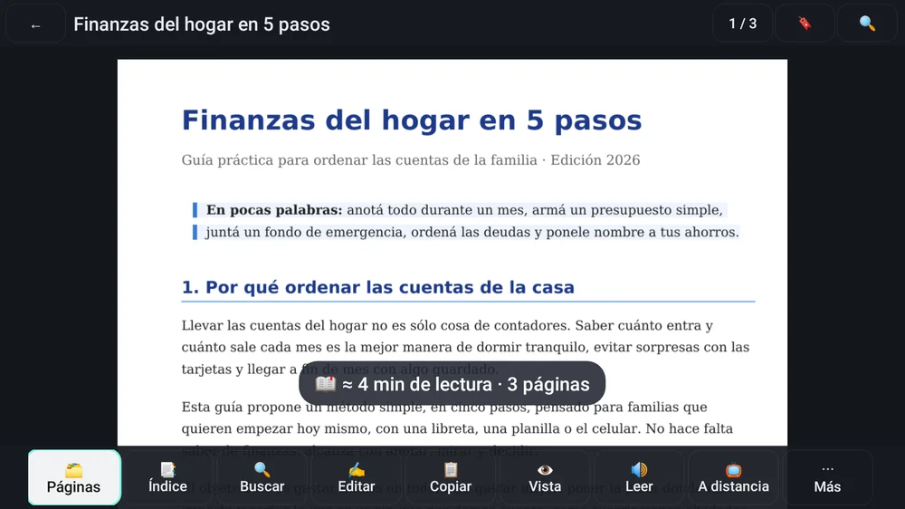
En la TV con el control remoto
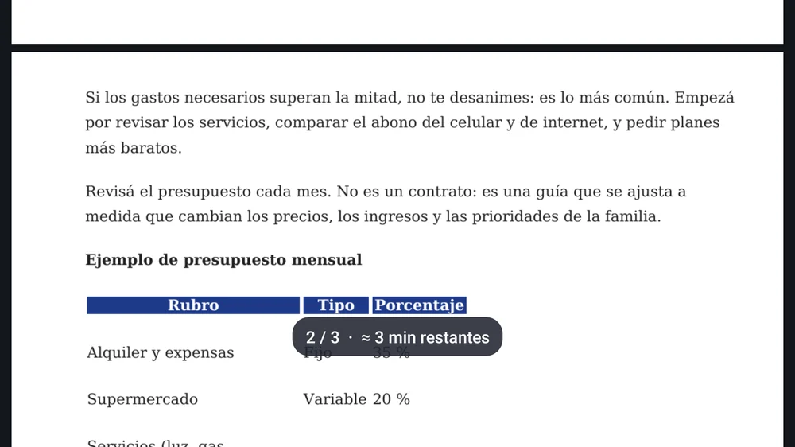
Lectura a distancia en la TV
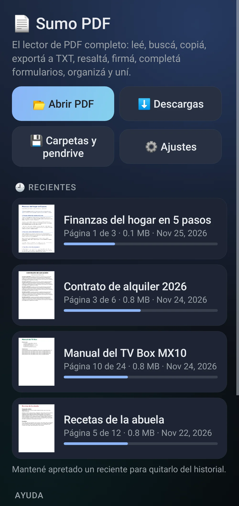
Recientes con miniatura y progresoLo que la hace distinta
- 📄 Abre cualquier PDF y va fluido aunque tu equipo tenga 1 GB de RAM.
- ✍️ Resaltá, firmá, completá formularios y organizá páginas: guarda un PDF nuevo.
- 📤 Exportá a TXT todo o un rango de páginas.
- 📺 En la TV, todo con el control remoto y modo lectura a distancia.
- 🚫 Sin publicidad. Nunca.
Qué es
Sumo PDF abre cualquier PDF del celular, de Descargas, de un pendrive o que te manden por WhatsApp o el correo, y lo muestra fluido aunque sea grande y el equipo tenga poca memoria. Buscás palabras, seleccionás y copiás texto, y exportás el documento entero o un rango de páginas a TXT. Para editar: resaltar, subrayar, tachar, dibujar a mano, notas, cuadros de texto, tu firma y formularios; también girar, ordenar o borrar páginas y unir varios PDF. Todo se guarda como un PDF nuevo para compartir: el original no se toca. Tiene miniaturas, índice, marcadores, ir a página, modo noche, lectura en voz alta y, en la TV, un modo de lectura a distancia que se maneja entero con el control remoto.
Qué hace
- Abre cualquier PDF: con «Abrir PDF» (selector de Android), desde Descargas, desde «Carpetas y pendrive», o desde otra app con «Abrir con» / «Compartir». Los PDF con contraseña la piden; los dañados se intentan reparar.
- Lectura fluida: dibuja sólo las páginas que se ven, guarda pocas en memoria y vuelve a dibujar nítido al hacer zoom. Vista continua o de a una página, con animación de pasar página.
- Buscar (sin importar tildes ni mayúsculas), seleccionar texto con el dedo y copiarlo, o ver la página como texto grande para copiar.
- Exportar a TXT el documento entero, la página actual o un rango, marcando dónde empieza cada página; se guarda en Descargas/Sumo PDF o se comparte.
- Editar: resaltar, subrayar, tachar, lápiz a mano, notas, cuadros de texto, firma dibujada y formularios. «Guardar PDF» crea un PDF nuevo (el original no se toca).
- Organizar: girar, mover y borrar páginas, y unir varios PDF en uno.
- Miniaturas, índice del PDF, tus marcadores, ir a página y recientes con miniatura que recuerdan la última página.
- Modo noche (invierte el papel sin arruinar las fotos), sepia, lectura en voz alta con la frase resaltada, tiempo de lectura estimado.
- En la TV: flechas para pasar páginas y desplazarse, OK abre los botones grandes, CH+/CH− hacen zoom, y el modo «A distancia» desplaza solo para leer desde el sillón.
Requisitos
- Celular o Android TV / TV box con Android 9 o más nuevo
- No necesita internet (sólo para activar la licencia de la edición web)
Funciones
- Abre cualquier PDF: archivos, Descargas, pendrive, «Abrir con» y «Compartir»
- Fluido con PDFs grandes aunque el equipo tenga 1 GB de RAM
- Buscar, seleccionar y copiar texto
- Exportar a TXT: todo, una página o un rango
- Resaltar, subrayar, tachar, lápiz, notas, cuadros de texto y firma
- Completar formularios PDF
- Girar, ordenar y borrar páginas; unir varios PDF
- Miniaturas, índice, marcadores, ir a página y recordar la última página
- Modo noche, sepia, zoom y vista continua o de a una página
- Lectura en voz alta y tiempo estimado de lectura
- En la TV: todo con el control remoto y modo de lectura a distancia
- Sin publicidad
Cómo se instala
- Descargá el APK e instalalo (si Android pregunta, permití instalar desde el navegador). Es el mismo APK para el celular y la TV box.
- Abrila: aparece la guía «Cómo usar» (se puede saltar y volver a ver desde Ajustes).
- Tocá «Abrir PDF» o abrí un PDF desde WhatsApp, el correo o Descargas con «Abrir con → Sumo PDF». En la TV se maneja con el control.
- Edición web: 7 días de prueba con todo; después «Activar» → «Comprar con Mercado Pago».
Novedades
- 1.0.0 — Primera versión.